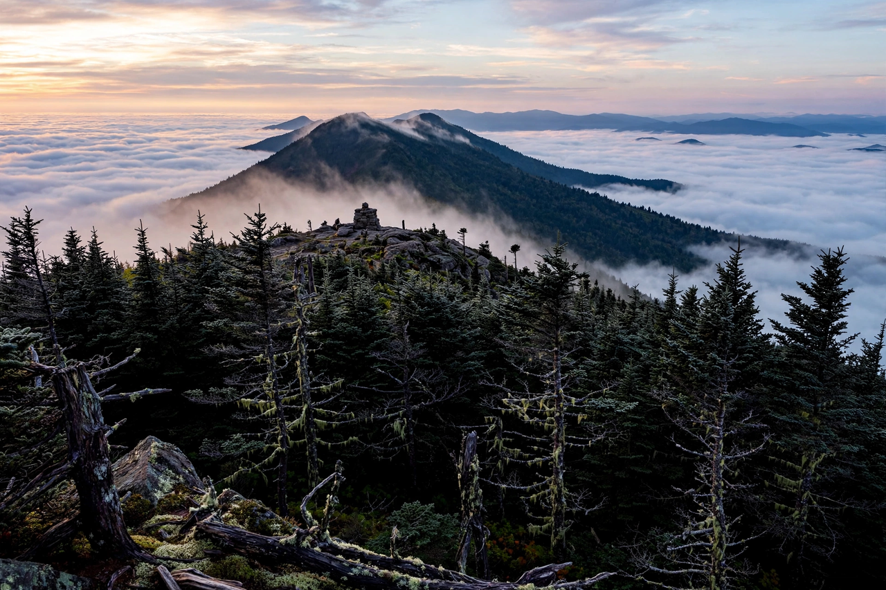

Highest peak of the Appalachian Mountains, North Carolina, United States
| Mount Mitchell | |
|---|---|
 Mount Mitchell, highest point east of the Mississippi River | |
| Elevation | 6,684 ft (2,037 m) |
| Location | Yancey County, North Carolina, U.S. |
| Range | Black Mountains, Appalachian Mountains |
| Named for | Elisha Mitchell |
Mount Mitchell, known in Cherokee as Attakulla, is the highest peak of the Appalachian Mountains and the highest peak in mainland North America east of the Mississippi River, at 6,684 feet (2,037 metres) above sea level. It lies in Yancey County, North Carolina, within Mount Mitchell State Park — the first state park established in North Carolina (1915) — and is accessible from the nearby Blue Ridge Parkway.
The mountain is named for Elisha Mitchell, a professor at the University of North Carolina who measured its elevation in 1835 and established it as higher than Grandfather Mountain and the New Hampshire peaks then thought to be the highest in the East. Mitchell fell to his death at nearby Mitchell Falls in 1857 while verifying his measurements, and he is buried at the summit, where an observation tower now stands.
The summit is covered in a dense Southern Appalachian spruce-fir forest of red spruce and Fraser fir, an ecosystem more typical of Canada than the American South. In the late 20th century the forest suffered severe decline from acid rain, air pollution, and the balsam woolly adelgid, an invasive insect; recovery efforts have since improved its condition. The summit climate is cool and wet, with subarctic characteristics, frequent cloud immersion, and snow possible in any month — the record low is −34 °F (−37 °C), North Carolina's coldest temperature.
A paved road from the Blue Ridge Parkway reaches a summit parking area, from which a short paved trail leads to the observation deck, offering panoramic views across the Black Mountains on clear days.